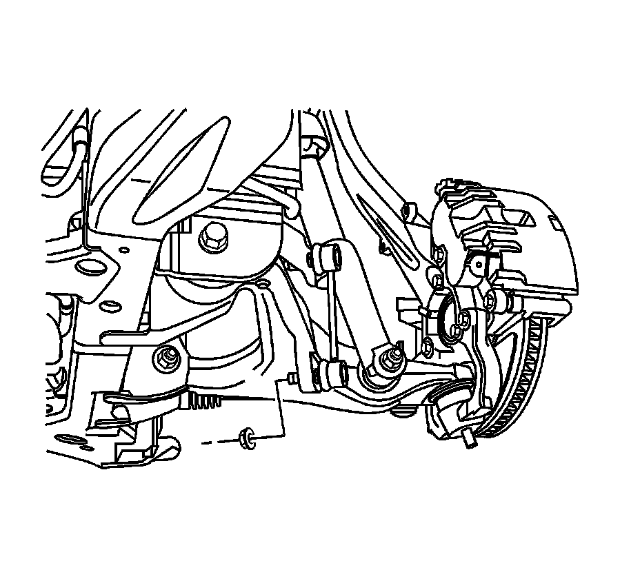
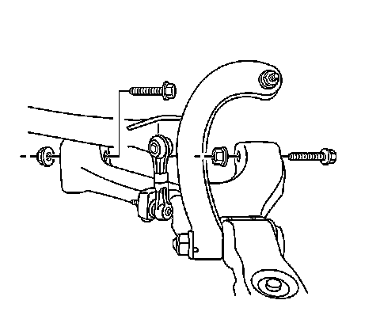

Front Suspension
Lower Control Arm Replacement
Tools Required
J 43631 Ball Joint Remover
Removal Procedure
1. Raise and support the vehicle. Refer to Lifting and Jacking the Vehicle (Service and Repair) .
2. Remove the tire and wheel. Refer to Tire and Wheel Removal and Installation (Service and Repair) .
3. Remove the air deflector. Refer to Front Air Deflector Replacement (Service and Repair) .
4. Remove the shock module yoke from the lower control arm. Refer to Shock Module Yoke Replacement (Shock Module Yoke Replacement) .

Notice: The ball stud must not rotate during disassembly or reassembly. Hand tools must be used to keep the ball stud from rotating. If air tools are used and the stud is allowed to rotate, damage to the ball stud and/or stud mounting hole may occur.
5. Remove the stabilizer shaft link lower retaining nut.
6. Remove the stabilizer shaft link from the lower control arm.
7. Remove the ABS wire harness from the lower control arm.

8. Remove the lower control arm to steering knuckle nut.

9. Using the J 43631 , separate the lower control arm from the steering knuckle.
Important: Will need to raise the power steering gear to have clearance when removing the rear lower control arm to frame retaining bolt.

10. Loosen the power steering gear retaining bolts and raise the power steering gear.

11. Remove the lower control arm to cradle nuts.
12. Remove the lower control arm to cradle bolts.
13. Remove the lower control arm by lowering the lower control arm at the frame and moving the ball stud upwards.
Installation Procedure
1. Install the lower control arm by installing the lower control arm on the ball stud and moving the lower control arm up to the cradle.
2. Install the lower control arm to cradle bolts.
Notice: Refer to Fastener Notice (Fastener Notice) .
3. Install the lower control arm to cradle nuts.
Tighten the nuts to 135 N.m (96 lb ft).
4. Tighten the power steering gear retaining bolts.
Tighten the bolts to 120 N.m (89 lb ft).
5. Install the lower control arm to steering knuckle nut.
1. Tighten the nut to 20 N.m (15 lb ft).
2. Tighten the nut to an additional 210 degrees.
6. Install the ABS wire harness to the lower control arm.
7. Install the stabilizer shaft link to the lower control arm.
8. Install the stabilizer shaft link lower retaining nut.
Tighten the nut to 110 N.m (81 lb ft).
9. Install the shock module yoke to the lower control arm. Refer to Shock Module Yoke Replacement (Shock Module Yoke Replacement) .
10. Install the air deflector. Refer to Front Air Deflector Replacement (Service and Repair) .
11. Install the tire and wheel. Refer to Tire and Wheel Removal and Installation (Service and Repair) .
12. Lower the vehicle.
13. Align the front end. Refer to Wheel Alignment Measurement (Service and Repair) .